Part 0: Setup
Text Prompts and Generated Images
I have generated prompt embeddings for several text prompts and selected 3 of them to generate images using the DeepFloyd IF diffusion model. The random seed used throughout all experiments is: 13.
Prompt 1: "a plane taking off for Christmas holidays"
The image correctly displays a plane taking off for Christmas holidays. The model has difficulty in generating a clear and detailed image of the plane, but it is able to generate a general idea of what the plane looks like. With 50 iteration steps, the image is more detailed and the plane is more visible, but still not realistic.
Prompt 2: "a snowy Golden Gate Bridge in San Francisco"
The image correctly displays a Golden Gate Bridge in San Francisco. The type of image stays the same for increasing the number of inference steps, the only difference is the amount of detail in the images.
The model has difficulty generating the snow on the Bridge, but it looks like a winter night scene. This could be because there aren't many snow images of the Golden Gate Bridge in the training data.
Prompt 3: "UC Berkeley's campanile tower next to the smaller"
Interestingly, the first image with the low number of inference steps displays a tower similar to the hoover tower, but not the campanile. It also includes the pine trees that are typical for Stanford. For 20 inference steps, the image contains a tower that looks like the campanile, but that tower is smaller and the other tower does not look like the hoover tower. For 50 inference steps, the image contains two towers that don't look like the hoover tower or the campanile, and they are similar to each other (in height and appearance).
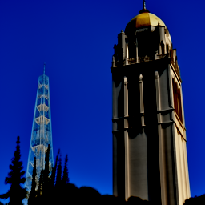
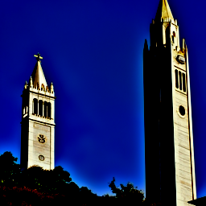
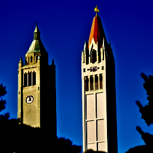
Sampling Loops
Part 1.1: Implementing the Forward Process
The forward process takes a clean image and adds noise to it according to the diffusion schedule. The function forward(im, t) implements this by sampling from a Gaussian distribution with mean and variance determined by the noise coefficients.
Below are the results of applying the forward process to the Berkeley Campanile test image at different noise levels (timesteps 250, 500, and 750).
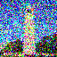
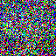
Part 1.2: Classical Denoising
We attempt to denoise the noisy images using Gaussian blur filtering. This classical approach struggles to recover the original image quality, especially at higher noise levels.
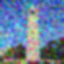
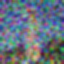
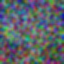
Part 1.3: One-Step Denoising
Using the pretrained UNet denoiser, we can estimate the noise in a noisy image and remove it to recover an estimate of the original image. The UNet is conditioned on the timestep and text prompt embeddings "a high quality photo".
Part 1.4: Iterative Denoising
Instead of denoising in a single step, we can iteratively denoise the image by
applying the denoising process multiple times, gradually reducing the noise level. This produces more realistic results than one-step denoising.
However, I did not manage to get a result that is similar to the original image. I have included two of my best attempts at iterative denoising below.
The one-step denoised image has lower details but is more similar to the original image. The iterative denoised image has more details but is less similar to the original image.
Starting from a noisy image at timestep 690 (i_start = 10), the denoising progression every 5th step:
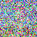
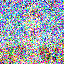
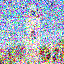
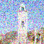
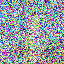
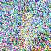
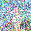
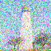
Comparison of different denoising methods:
Part 1.5: Diffusion Model Sampling
We can generate images from scratch by starting from pure random noise and iteratively denoising it. This demonstrates the generative capability of diffusion models. Below are 5 samples generated from random noise using the prompt "a high quality photo".
Part 1.6: Classifier-Free Guidance
Classifier-Free Guidance (CFG) improves the quality and prompt alignment of generated images by combining conditional and unconditional predictions. The guidance scale controls how strongly the model follows the prompt. Below are 5 samples generated using CFG with a guidance scale of 7.5 and the prompt "a high quality photo".
Part 1.7: Image-to-image Translation
SDEdit (Score-based Diffusion Editing) allows us to edit images by adding noise and then denoising them. The amount of noise added determines how much the image changes. Below are SDEdit results on the Campanile image at different noise levels (timesteps).
Part 1.7.1: SDEdit on Sketches
SDEdit can transform sketches into (realistic) images. Below are results for different input sketches (car sketch, football, and Golden Gate Bridge) at various noise levels. The car sketch is from the internet and the other ones are my own sketches drawn with pain(t) using the touch pad.
The images are only reconstructed at very low noise levels (t=390). The
Car Sketch
Web Image: Original Car Sketch
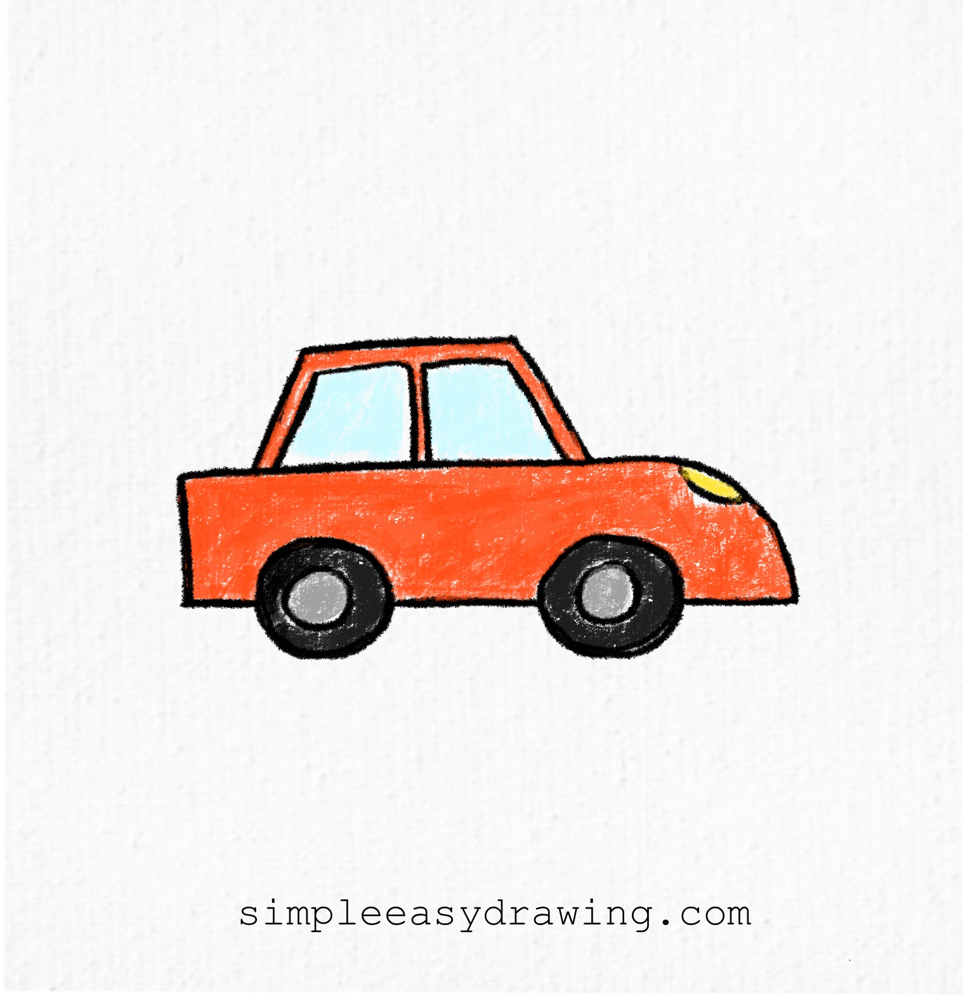
Football Sketch
Hand-Drawn: Original Football Sketch
Golden Gate Bridge Sketch
Hand-Drawn: Original Golden Gate Bridge Sketch
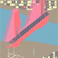
Part 1.7.2: Inpainting
Inpainting allows us to edit specific regions of an image while preserving the rest. Below is the result of inpainting the top portion of the Campanile image using the prompt "a high quality picture".
I tried many many times to get a good result for the inpainting of the images, especially for the campanile, but I was not able to get a good result.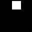
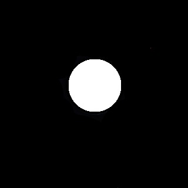
Part 1.7.3: Text-Conditional Image-to-image Translation
By using specific text prompts during the denoising process, we can guide the transformation of the Campanile image in creative ways. Below are results using different prompts at various noise levels.
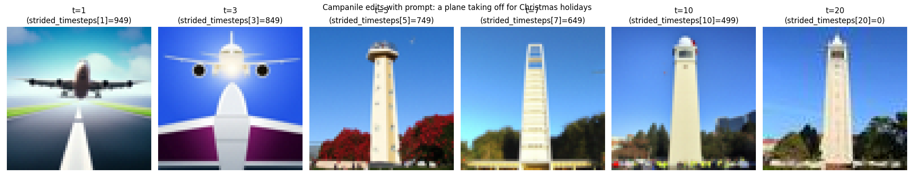
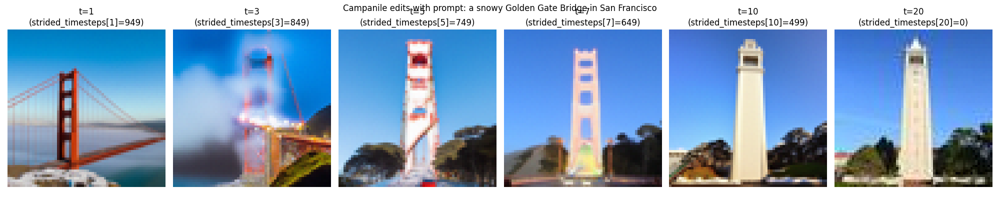

Part 1.8: Visual Anagrams
Visual anagrams create images that can be interpreted differently when viewed in different orientations. By combining two prompts and flipping the image during the denoising process, we create hybrid images that reveal different content when rotated 180 degrees.
Bear / Duck Visual Anagram
This visual anagram appears as an oil painting of a bear when viewed upright, but reveals an oil painting of a duck when rotated 180 degrees.
Car / Bathing Tub Visual Anagram
This visual anagram shows a pencil sketch of a car when upright, but transforms into a pencil sketch of a bathing tub when rotated 180 degrees.
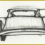
Part 1.9: Hybrid Images
Hybrid images are images that contain two different interpretations One interpretation is contained in the low frequencies of the image, the other interpretation is contained in the high frequencies of the image. By controlling the frequency cutoff, we can control the blending between the two interpretations. .
Hybrid Car (Pencil Sketch) / Bathing Tub
For a cutoff of 16 this image contains an old car as well a bathing tub, depending on how far away from the image you are.
Hybrid Wine Glass / Candle
For a cutoff of 4, 8, and 16 this image contains a wine glass as well a candle, depending on how far away from the image you are. I really like the results for the cutoff of 8 and 16. The cutoff of 2 is not very good, as it only shows the wine glass.
Training a Flow Matching Model
1.2 Visualizing the Noising Process (UNet Denoiser Training)
To train the denoiser network noisy images are created by adding Gaussian noise to clean MNIST digits using various noise levels (
σ).
Below the output of the noising process for a single MNIST digit with increasing values of
σ \in [0.0, 0.2, 0.4, 0.5, 0.6, 0.8, 1.0] is visualized.
As σ increases, the digit becomes more and more corrupted by noise,
making the restoration problem harder.

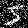
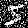
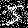
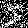
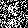
1.2.1 Training
The objective is to train a denoiser to denoise noisy image
xnoisy = x + σε with noise σε applied to a clean image x.
Dataset and dataloader: The MNIST dataset via torchvision.datasets.MNIST is used.
Only the training set is used, the dataset is shuffled before creating the dataloader, and a batch
size of 256. The dataset is trained over for 5 epochs. The image batches are noised when fetched from the
dataloader so that in every epoch the network sees new noised images due to random σ, improving
generalization.
Model: The UNet architecture defined in section 1.1 with hidden dimension D = 128 is used.
Optimizer: The Adam optimizer with a learning rate of 1e-4 is used.
Below, the training loss curve and sample denoised results on the test set after the 1st and 5th epochs are visualized.
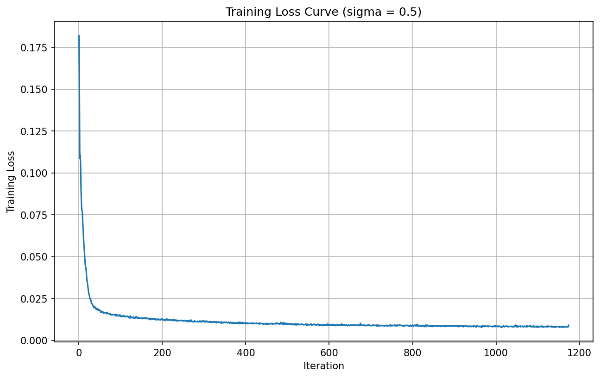
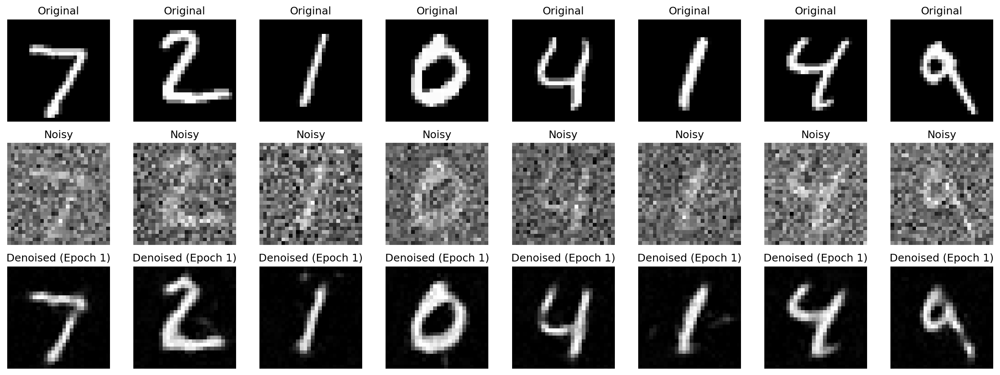
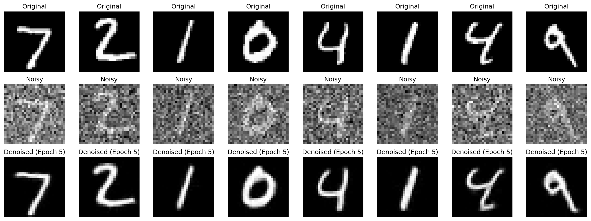
1.2.2 Out-of-Distribution Testing
Visualize the denoiser results on test set digits with varying levels of noise
σ.
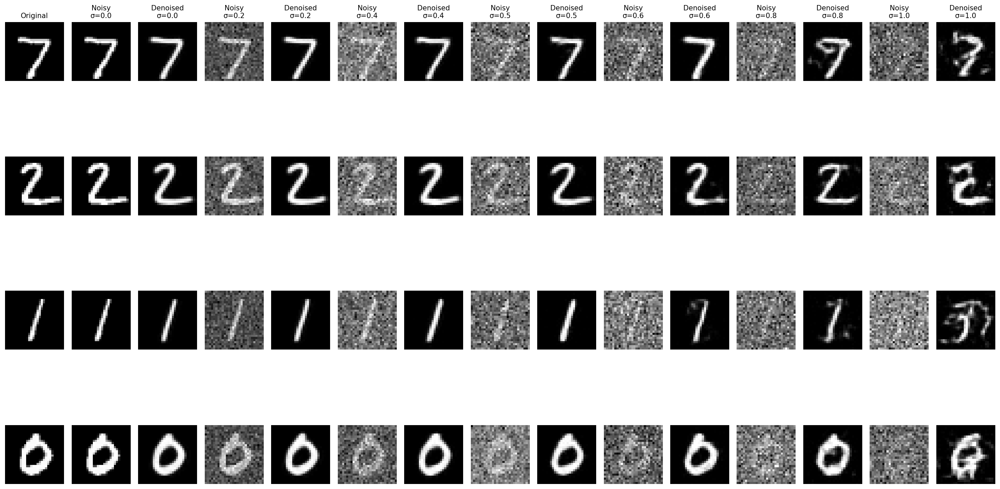
1.2.3 Denoising Pure Noise
To make denoising a generative task, the denoiser is trained to denoise pure random Gaussian noise
xnoisy = ε where ε ~ N(0, I), effectively starting from a blank canvas
and denoising it to generate a clean image. The same training process as in section 1.2.1 is repeated, but with pure noise as input,
training for 5 epochs.
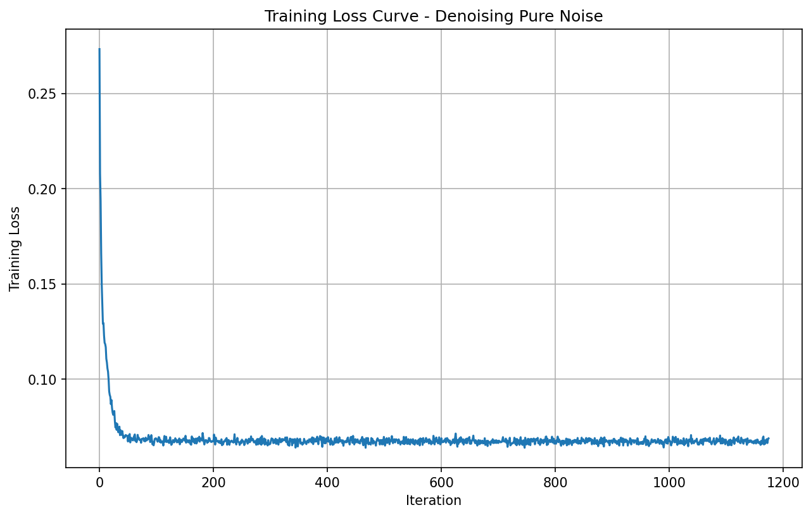
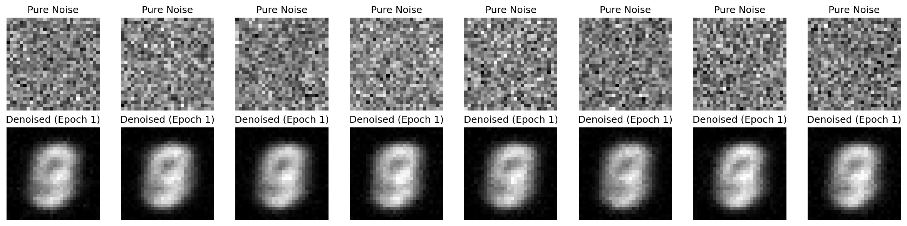
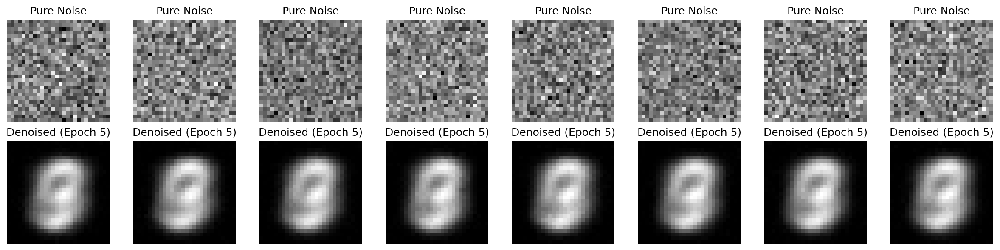
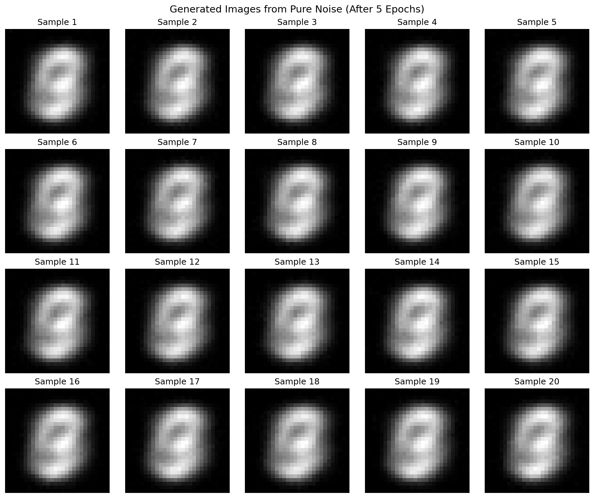
Patterns observed: The generated outputs from pure noise tend to converge toward blurry, averaged versions of the training digits. Rather than generating distinct, sharp digits, the model produces images that resemble a "centroid" or average of all training examples.
Explanation: With MSE loss, the model learns to predict the point that minimizes the sum of squared distances to all training examples. This is equivalent to predicting the mean of the training distribution. In the context of MNIST digits, this means the model learns to output a blurred average that minimizes the expected squared error across all possible digits (0-9). The model cannot generate specific digits because it has no conditioning signal to distinguish between different classes. It can only predict the optimal "centroid" that minimizes loss across all training images.
2.2 Training the UNet
Training our time-conditioned UNet is now pretty easy. Basically, we pick a random image from the training set,
a random timestep t, add noise to x_0 to get x_t, and train the denoiser to predict
the flow at t. We repeat this for different images and different timesteps until the model converges and we are happy.
Dataset and dataloader: The MNIST dataset via torchvision.datasets.MNIST is used.
Training is performed only on the training set. The dataset is shuffled before creating the dataloader.
A batch size of 64 is used. As shown in Algorithm B.1, image batches are noised when fetched from the dataloader.
Model: The time-conditioned UNet architecture defined in section 2.1 is used with recommended hidden dimension D = 64.
The conditioning signal t is injected into the UNet following the diagram and pseudocode.
The timestep t is normalized before embedding it.
Optimizer: The Adam optimizer with an initial learning rate of 1e-2 is used.
An exponential learning rate decay scheduler with a gamma of 0.999 is implemented using
torch.optim.lr_scheduler.ExponentialLR(...). The scheduler is stepped after every epoch.
Below, the training loss curve for the time-conditioned UNet over the whole training process is shown.
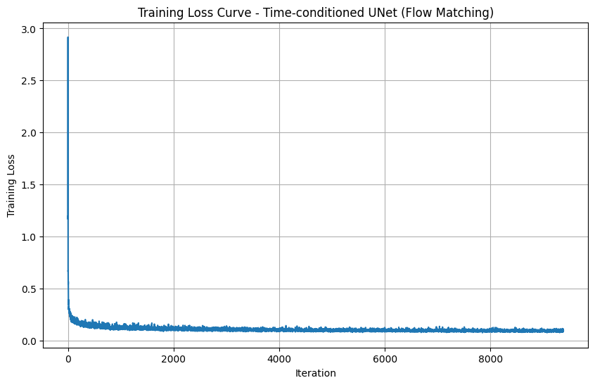
2.3 Sampling from the UNet
We can now use our trained time-conditioned UNet for iterative denoising using Algorithm B.2. Starting from random noise, we iteratively apply the denoising process to generate clean images. The results improve as the model trains for more epochs, with legible digits emerging even after just a few epochs of training.
Below are the sampling results from the time-conditioned UNet after training for 1, 5, and 10 epochs. While the results are not perfect, reasonably good and legible digits can be observed. The quality improves noticeably as training progresses, with clearer digit shapes and fewer artifacts at later epochs.
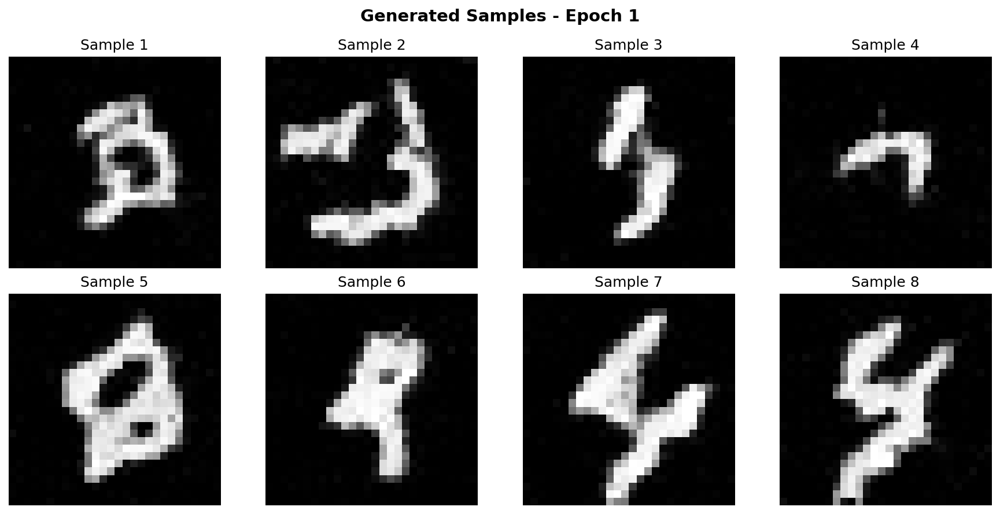
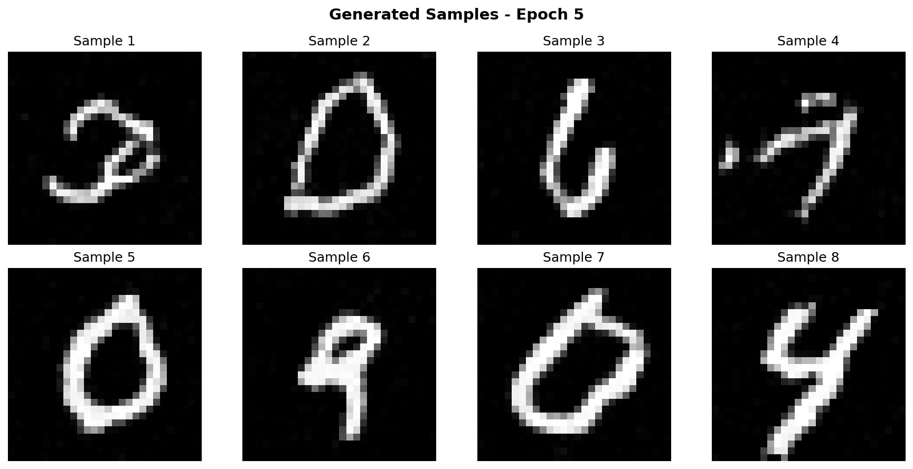
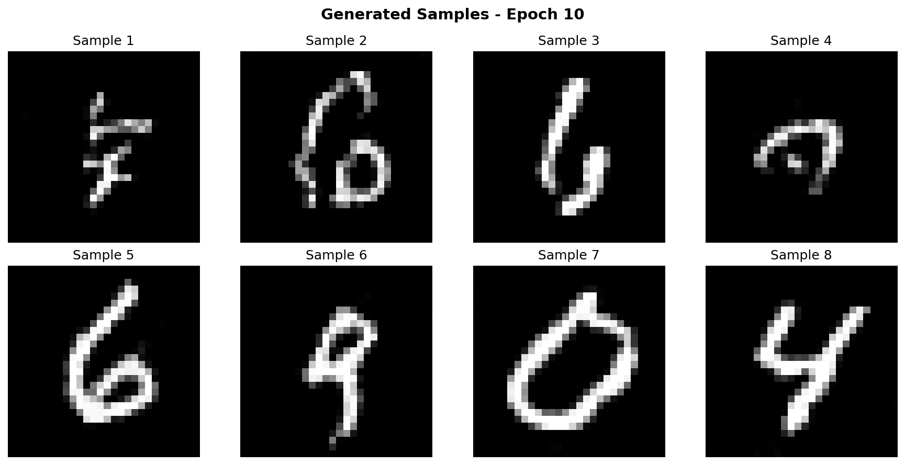
2.4 & 2.5 Training the UNet
Adding Class-Conditioning to UNet
To make the results better and give more control for image generation, the UNet can also be optionally conditioned on the class of the digit 0-9.
Below, the training loss curve for the class-conditioned UNet over the whole training process is shown.
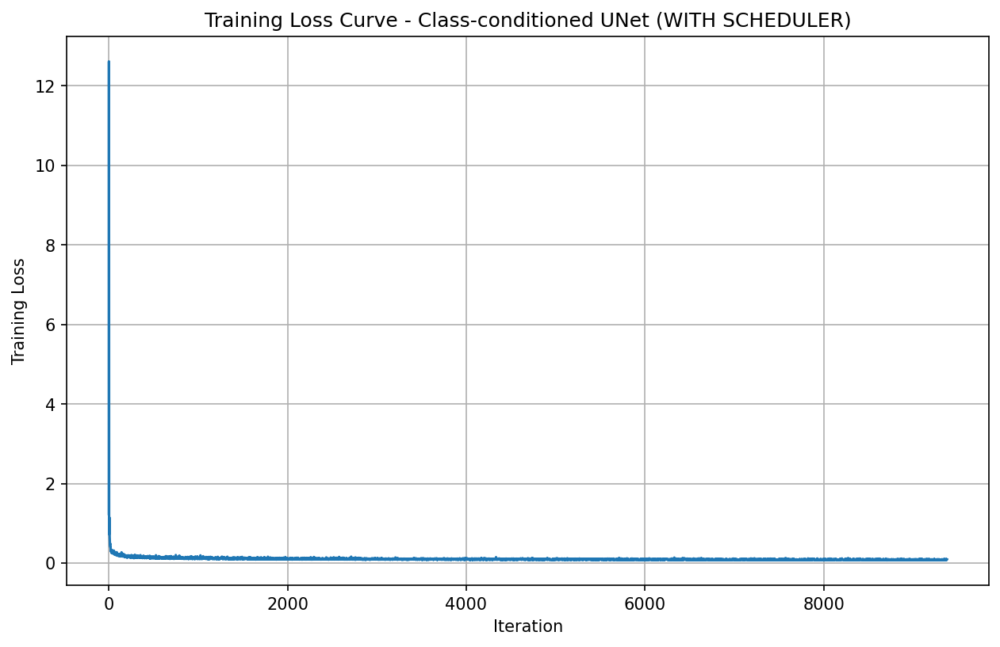
2.6 Sampling from the UNet
Now sampling with class-conditioning and classifier-free guidance with γ = 5.0 is performed.
Class-conditioning allows to control which digit class to generate, while classifier-free guidance improves
the quality and class fidelity of the generated samples by combining conditional and unconditional predictions.
γ = 5.0):
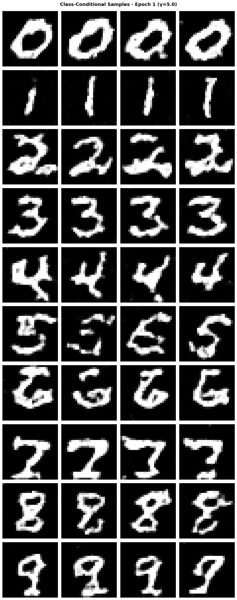
γ = 5.0):
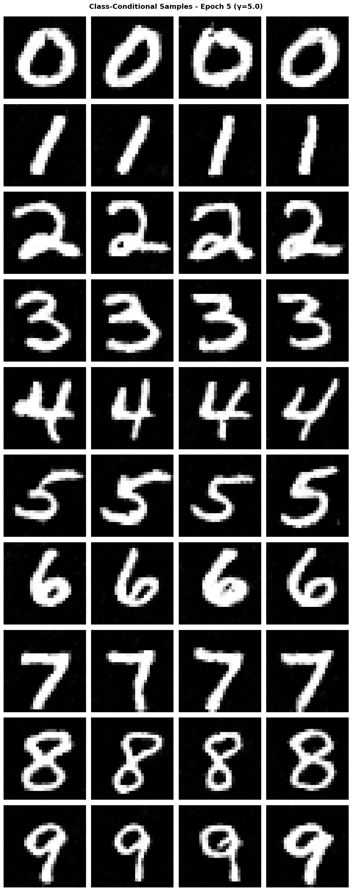
γ = 5.0):
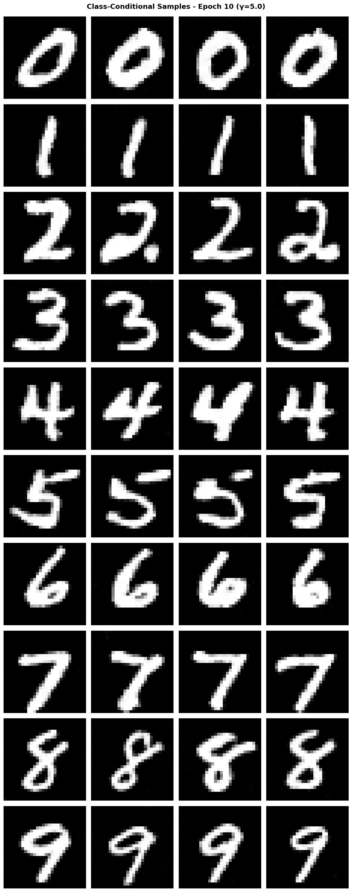
Removing the Learning Rate Scheduler
The exponential learning rate scheduler adds complexity to the training process. To simplify the training setup while maintaining performance, we removed the scheduler and compensated by adjusting the initial learning rate and training dynamics.
What I did to compensate: Instead of using an exponential decay scheduler (gamma = 0.999), a constant learning rate was maintained throughout training. To ensure similar performance, the initial learning rate was set to 1e-2 to match the effective learning rate that the scheduler would have provided during the later stages of training.
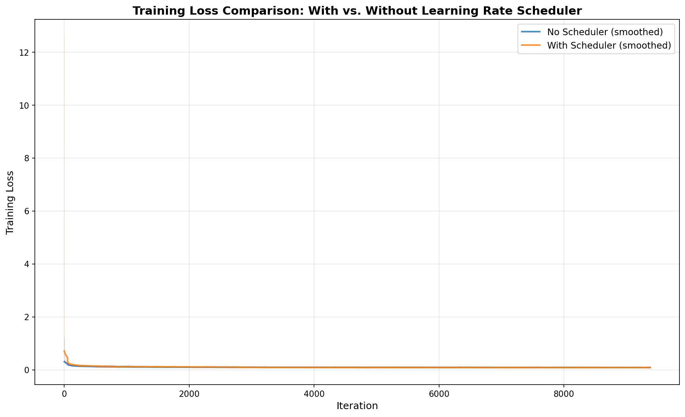
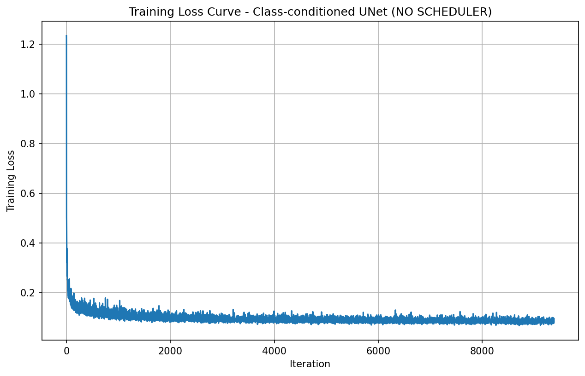
γ = 5.0):
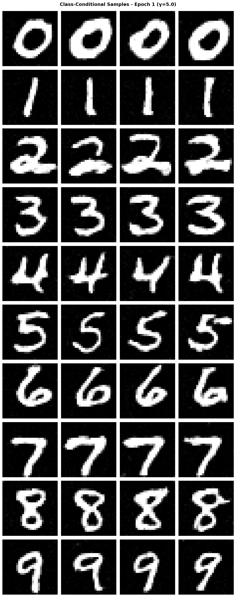
γ = 5.0):
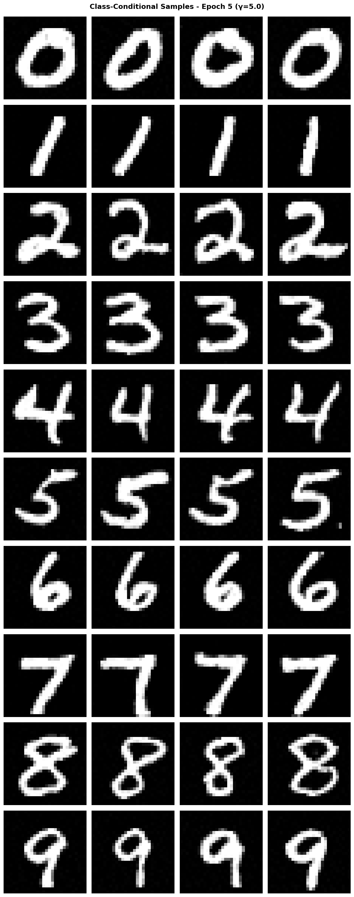
γ = 5.0):
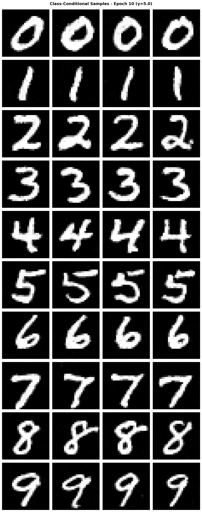